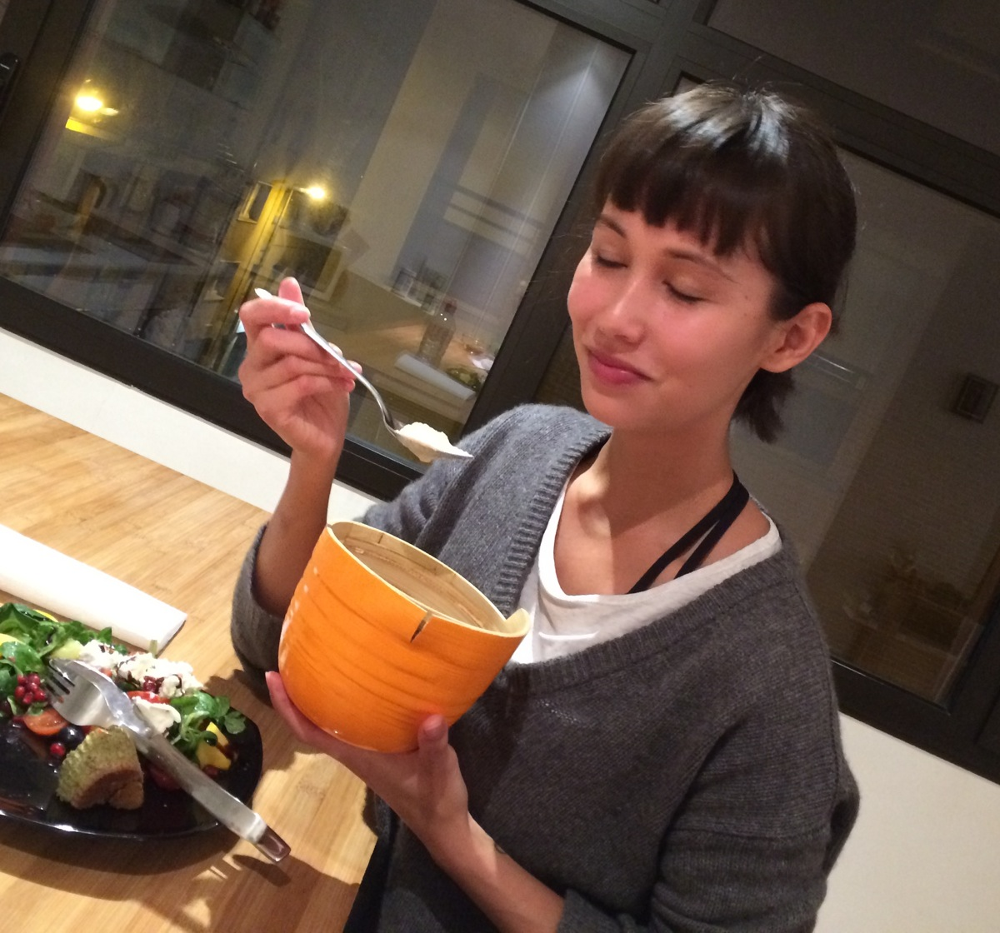
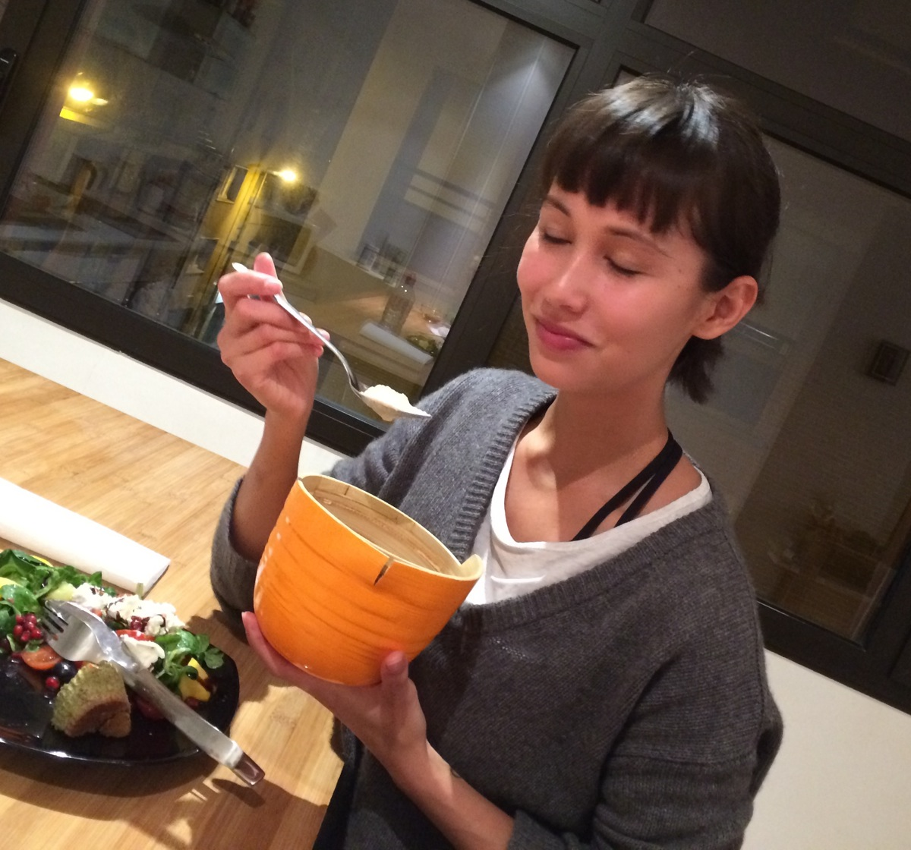

Skinny Almond-Cauliflower Soup
 

For those days where you just want a simple and utterly comforting dish at home. Not only is this Lila, Chop! recipe wonderfully nutritious, it's also very easy to make and fits into most low-carb, low-calorie, vegan, dairy- or gluten- free diets! The best part is that it's so versatile that with this basic recipe you can make almost any vegetable soup and serve it with any side salad or bread. I like to alternate broccoli and cauliflower as my main ingredients, but why not try carrot, pumpkin, or zucchini?
| amount | name | |
|---|---|---|
| raw cauliflower head, chopped | ||
| cube | vegetable stock | |
| ml | water | |
| ml | coconut milk | |
| whole | shallot or small onion | |
| tbsp | almond butter or | |
| tbsp | ground almonds | |
| tbsp | sunflower seeds, slivered almonds, or more almond butter for topping (optional) | |
| time | instruction | |
|---|---|---|
| 3 | min | In the bottom of a pot, gently fry the shallots/onion until golden, then set aside. |
| 10 | min | Add the stock, water, and cauliflower to the pot and let cook until the cauliflower is soft. |
| 0.5 | min | Pour everything into a blender or mixer, adding the coconut milk, almond butter, and cooked shallots. |
| 1 | min | Blend all the ingredients together until smooth. If the consistency is too thick for your liking, add more water. |
| 0.5 | min | Serve in a bowl and add desired toppings. |
| 15 | min total | Devour immediately with a side of salad or allow to cool if you want to consume it cold. |
Pumpkin Seed Protein Bread Muffins
I discovered Protein Pow's low-carb and gluten-free recipe for Pumpkin Seed Protein Bread around the same time that I was putting this recipe together. So I baked these tasty little bread muffins and was delighted to find they went fabulously together with my favourite almond butter and even better with my skinny almond-cauliflower soup! Who doesn't like to dip bread in their soup?